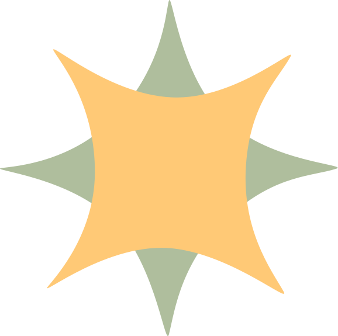

Over mij
Hallo, ik ben Kenza Houben, en studeer momenteel Multimedia en Creatieve Technologie aan de Erasmushogeschool Brussel.
Ik ben altijd bezig met het ontdekken van nieuwe mogelijkheden in 3D en design, en streef ernaar om mezelf steeds verder te ontwikkelen.

Mijn reis

Moderne talen en economie
Sint-Jozefscollege in Sint-Pieters-Woluwe
Na het behalen van mijn diploma Moderne Talen en Economie in het middelbaar, had ik nog niet direct een duidelijk beeld van mijn toekomstige loopbaan. Omdat ik destijds wel interesse had in lesgeven, overwoog ik om een lerarenopleiding te volgen.
Lerarenopleiding Secundair Onderwijs
Erasmushogeschool Brussel
In 2023 koos ik voor de lerarenopleiding secundair onderwijs, met Nederlands en geschiedenis als keuzevakken. Hoewel ik deze vakken enorm waardeerde, zag ik mezelf niet voor een klas staan. Na een gesprek met de studentenbegeleider kwam Multimedia en Creatieve Technologie als aanbeveling naar voren tussen de vele opties.
Ik bezocht infodagen en openlesdagen en was meteen verkocht: deze richting sprak me direct aan. Ondanks dat ik nog geen ervaring had in dit vakgebied, voelde ik dat ik hier mijn toekomst wilde opbouwen.
Multimedia en Creatieve Technologie
Erasmushogeschool Brussel
Ik ben zonder enige voorkennis aan deze opleiding begonnen, maar heb in de afgelopen twee jaar enorm veel geleerd. Nu, in mijn laatste jaar, ben ik zelfs van plan om na mijn bachelor nog verder te studeren.
Ik hou ervan om mijn creativiteit te ontdekken en toe te passen in nieuwe technologieën. De afgelopen jaren hebben me bevestigd: dit is wat ik later wil doen.